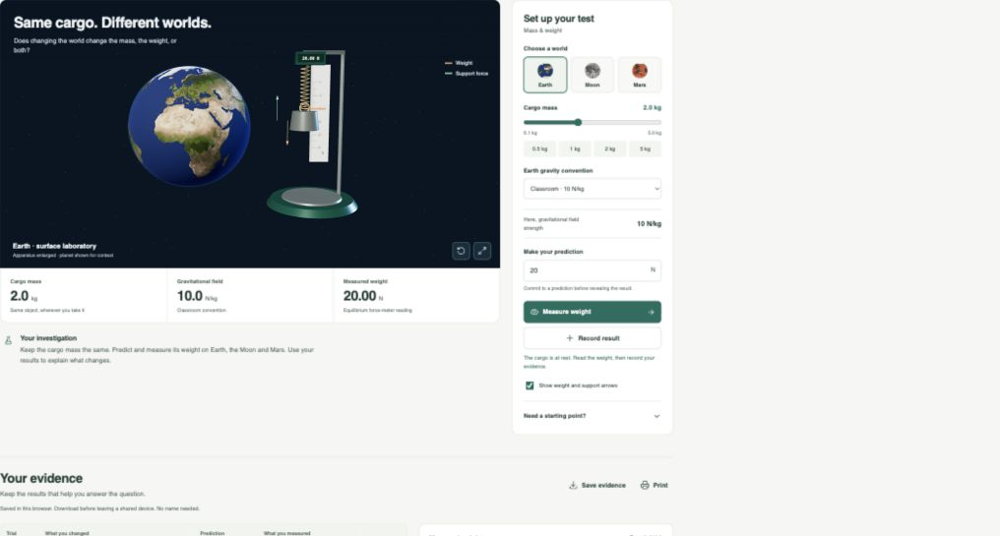
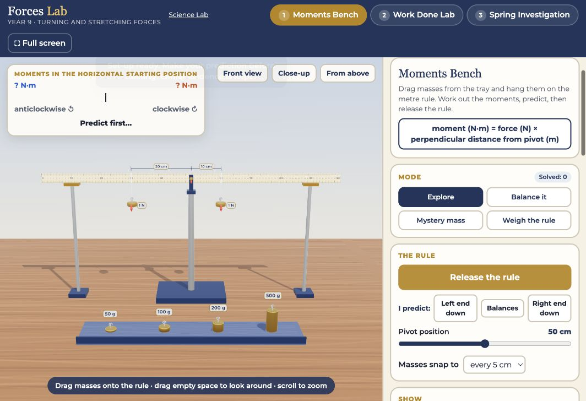

Make the first light
Compare an open and a closed switch. Use two readings to explain why the lamp changes.
Choose your year group, then open the investigation your teacher has set.
Lab activities open in a new tab. Keep this page open to return to your year group.
Build a circuit, change one thing and measure what happens. Choose the investigation named by your teacher inside the lab.
Open Year 7 Circuit Lab
Add a battery, lamp and switch. Tap one gold terminal, then another, to connect a wire. Make a complete loop.
Select the switch and use Open/Close switch. Observe the lamp and the current. Predict what will happen before changing it again.
Use Record reading for each test. Open Notebook to compare results, plot a graph and explain the pattern.
Open Circuit Lab, then choose one of these investigations inside it.
Compare an open and a closed switch. Use two readings to explain why the lamp changes.
Explore one, two and three lamps, use the Series B preset with 10, 20 and 40 Ω resistance buttons, and test an open switch. Record seven trials, draw five circuits and plot a graph.
Add branches, compare unequal resistances and test branch and main-switch faults. Record eight trials, draw six circuits and plot a graph.
Keep resistance fixed and vary the voltage. Collect five readings and predict a new one.
Design two independently controlled lights. Test all four switch combinations and justify your design.
Compare series aiding, opposing and parallel batteries. Use lamp measurements to evaluate an AI claim about brightness, then explore the optional filament-failure demonstration.
Compare resistor values in an LED circuit, test polarity and a buzzer, then investigate a blown fuse. Record measurements and draw the circuits.
Set a target current, vary resistance and record four trials. Predict the voltage required, then explain what happens at the source's voltage limit.
Tap to add pieces and tap pairs of terminals to connect them. Focus a component and use the arrow keys to move it. Use Edit component above the bench to change values, rotate or remove it. Quick-value buttons provide common settings without typing. On a smaller screen, scroll the workbench sideways to reach the whole circuit.
Switch between the component view and circuit symbols. Work with a partner if useful: one person directs the connections while the other places the pieces. Swap roles and explain a result each.
Use Save lab to download the circuit and notebook. Use the folder button in the lab to open that saved file later. Save before loading another file, because importing replaces the current work.
The notebook also exports a CSV table and a printable HTML report. Browser storage is local to this device and browser; download a copy before leaving a shared device. You do not need to enter your name.
This lab models steady direct current. Lamps have fixed resistance; real filament lamps change resistance as they heat. Leads and the battery have small resistances, so readings can differ slightly from ideal textbook values.
Use the simulator to explain patterns, then compare them with teacher-supervised equipment. Optional Heat & damage illustrates overload, smoke, fire risk, broken filaments and blown ammeter fuses. These effects use a teaching heat index; they do not predict real temperatures, fire or failure times. Current markers show relative conventional current, not the speed of an electrical signal. LED and buzzer behaviour uses simplified polar DC models. Current sources show actual output and their voltage limit; battery capacity and depletion are not modelled. Mains electricity is not modelled.
Open your teacher's topic below. Each link starts its guided investigation at stage 1. Predict, measure, collect evidence and explain what you find.
Your saved notebook is kept when you move between investigations.

Compare three worlds, find the mass–weight pattern and test a claim.
Compare launches, test gravity and solve a new orbit. Record your thinking in your science book.
Compare hemispheres, remove tilt and investigate sunlight intensity.
Satellite orbits: follow Do, Watch and In your book. Draw predictions, copy useful readings and write explanations in your science book. Try the stretch questions after the three missions.
Mass, weight and seasons: select Start this stage inside the lab to reach the controls. Read what to change and what to keep fixed. Make a prediction, measure, then select Record result.
Use Your evidence to compare readings and write your stage explanation. Read the success criteria before opening the review answer. Follow your teacher's direction before moving to another stage or choosing Explore freely.
Your notebook saves in this browser. Select Save evidence to download your readings and explanations before leaving a shared device. You do not need to enter your name. Browser saving does not move your work to another device.
Year 8 gravity and space lessonsChoose your teacher's practical. Investigate real-style apparatus across four challenge tiers, with saved evidence and explanations across lessons.
Each link opens its practical. Your mission level, readings and explanations are kept in this browser.

Place masses on a metre rule, move the pivot and solve balance challenges.
Compare floors, ramps, vertical lifting and zero-work situations.
Read a spring at eye level, graph your results and investigate permanent stretching.
Choose Discover, Investigate, Challenge or Design, then select Set up this mission. Read what to change and keep fixed. Predict, collect the required comparisons and explain your evidence in the mission notebook. Explore freely supports your own questions.
Readings and explanations save in this browser. Download evidence gives a CSV; Save a resume file lets you continue on another device. Keep a copy before leaving a shared device. Do not enter pupil names.
Year 9 turning and stretching forces lessonsIf your year group or topic is not listed, return to your class page and follow your teacher's link.